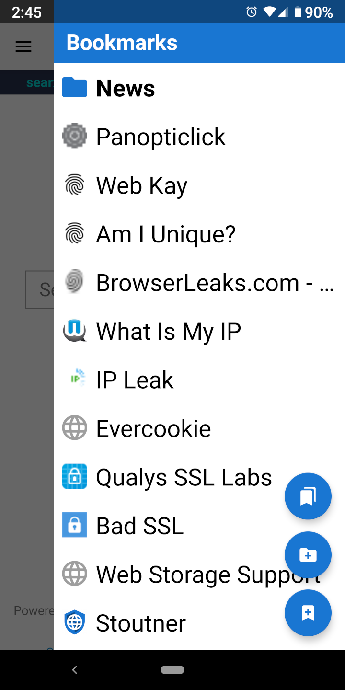

Bookmarks can be accessed in a drawer layout by swiping from the right of the screen.
Tapping the top floating action button loads the bookmarks activity, which has advanced options like moving and deleting bookmarks. From the bookmarks activity, there is an option to load the bookmarks database view. This shows the bookmarks as they exist in the SQLite database, which can be useful for troubleshooting problems with importing and exporting bookmarks.